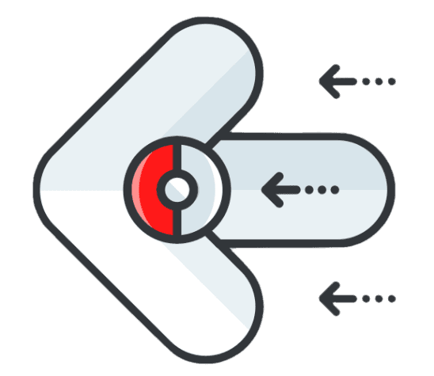

Squirtle
Squirtle tiene forma de una tortuga semiacuática de una tonalidad azulada, su caparazón es color café, las placas periféricas de color blanco y finalmente su plastrón de una tonalidad crema, posee una cola con la punta enrollada, además de tres dedos en cada una de sus extremidades, una boca con una punta en forma de pico característico de las tortugas y unos grandes ojos de tonalidad rojiza.
Al nacer su espalda se va hinchando hasta formarse un caparazón, al principio es blando y elástico, si lo golpeas este rebotará, pero conforme pasa el tiempo se irá endureciendo para resistir los ataques de cualquier amenaza, ocultándose dentro de él cuando siente peligro, al estar escondido puede lanzar una enorme presión de agua desde su interior cuando tiene la oportunidad. Igualmente retrae su cabeza y extremidades mientras duerme para sentirse seguro, a veces se puede llegar a ver como se mece su caparazón entre sueños. Su caparazón no solo le sirve de protección únicamente, con su forma redondeada y las hendiduras que posee, le sirven para reducir su resistencia en el agua y así poder nadar a enormes velocidades. Además de lanzar con gran precisión chorros de agua a presión por la boca, también puede lanzar espuma y usar su duro caparazón para atacar. Siempre se lo ve cerca del agua, ya sea dulce o salada.
